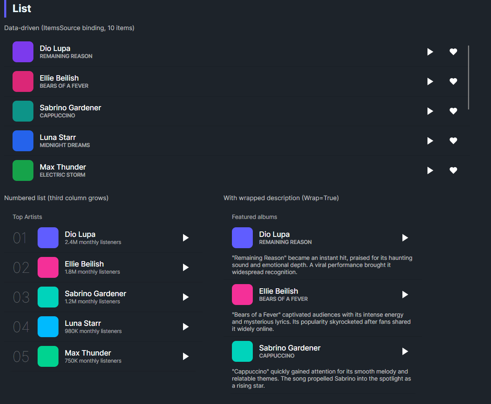

DaisyList is a vertical list container with row and column primitives for structured content. DaisyListRow uses a custom panel that can designate a grow column and wrap specific columns onto new lines. Use it for media lists, stats rows, or mixed text/icon layouts with consistent spacing.
DaisyList: Overall list container (default StackPanel items).DaisyListRow: A row of columns; supports spacing and a grow column.DaisyListColumn: A cell; can grow to fill remaining space or wrap to a new line.| Element | Property | Description |
|---|---|---|
DaisyListRow |
GrowColumn (int, default 1) |
0-based index of the child that should fill remaining width; set -1 to disable. |
DaisyListRow |
Spacing (default 12) |
Gap between columns. |
DaisyListColumn |
Grow (bool) |
Force this column to fill remaining space (overrides GrowColumn). |
DaisyListColumn |
Wrap (bool) |
Moves the column to a new line below the main row. |
<!-- Simple list -->
<controls:DaisyList CornerRadius="16" Background="{ThemeResource DaisyBase100Brush}">
<TextBlock Text="Most played songs" FontSize="11" Opacity="0.6" Margin="16,12,16,4" />
<controls:DaisyListRow>
<controls:DaisyListColumn>
<Border Width="40" Height="40" CornerRadius="8" Background="{ThemeResource DaisyPrimaryBrush}" />
</controls:DaisyListColumn>
<controls:DaisyListColumn Grow="True">
<StackPanel>
<TextBlock Text="Dio Lupa" FontWeight="Medium" />
<TextBlock Text="Remaining Reason" FontSize="11" Opacity="0.6" />
</StackPanel>
</controls:DaisyListColumn>
<controls:DaisyListColumn>
<controls:DaisyButton Variant="Ghost" Shape="Square" Size="Small">
<PathIcon Width="16" Height="16" Data="M6 3L20 12 6 21 6 3z" />
</controls:DaisyButton>
</controls:DaisyListColumn>
</controls:DaisyListRow>
</controls:DaisyList>
<!-- Wrapping description column -->
<controls:DaisyList Width="380">
<controls:DaisyListRow>
<controls:DaisyListColumn MinWidth="40">
<Border Width="40" Height="40" CornerRadius="8" Background="{ThemeResource DaisyInfoBrush}" />
</controls:DaisyListColumn>
<controls:DaisyListColumn Grow="True">
<StackPanel>
<TextBlock Text="Song Title" FontWeight="Medium" />
<TextBlock Text="Subtitle" FontSize="11" Opacity="0.6" />
</StackPanel>
</controls:DaisyListColumn>
<controls:DaisyListColumn Wrap="True">
<TextBlock Text="Long description that wraps to its own line." TextWrapping="Wrap" Opacity="0.7" />
</controls:DaisyListColumn>
</controls:DaisyListRow>
</controls:DaisyList>Grow on a single column (or GrowColumn on the row) to keep actions/icons aligned while text stretches.Wrap=True on the description column; keep other columns non-wrapping.Spacing across rows for visual rhythm; default 12 works well for compact lists.CornerRadius and background on DaisyList for card-like blocks.